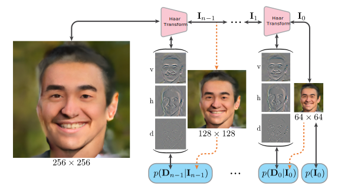

Wavelet Flow: Fast Training of High Resolution Normalizing Flows
Sept. 25, 2020

Abstract
Normalizing flows are a class of probabilistic generative models which allow for both fast density computation and efficient sampling and are effective at modelling complex distributions like images. A drawback among current methods is their significant training cost, sometimes requiring months of GPU training time toachieve state-of-the-art results. This paper introduces Wavelet Flow, a multi-scale, normalizing flow architecture based on wavelets. A Wavelet Flow has an explicit representation of signal scale that inherently includes models of lower resolution signals and conditional generation of higher resolution signals, i.e., super resolution. A major advantage of Wavelet Flow is the ability to construct generative models for high resolution data (e.g., 1024×1024 images) that are impractical with previous models. Furthermore, Wavelet Flow is competitive with previous normalizing flows in terms of bits per dimension on standard (low resolution) benchmarks while being up to 15× faster to train.
Authors
Material
Citation
@inproceedings{jjyu2020waveletflow,
author = {Jason J. Yu and Konstantinos G. Derpanis and Marcus A. Brubaker},
title = {{Wavelet Flow}: Fast Training of High Resolution Normalizing Flows},
booktitle = {NeurIPS},
year = {2020}
}
Misc
PNG images from appendix